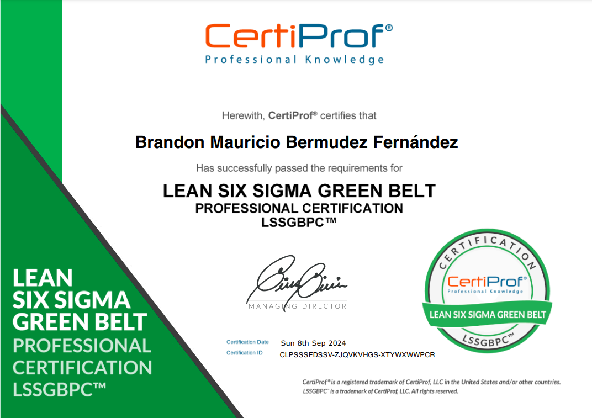
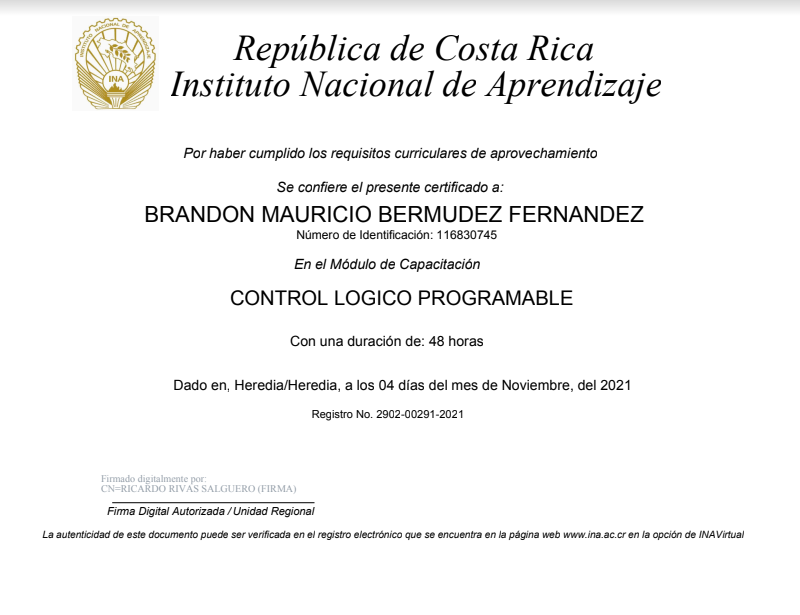

Certificates





Software developer | Data Analyst | Electronic technician
Celphone: +506 8506 8028 Email: Brandon.ber.fer@gmail.com
I stand before you as a proactive professional with 8 years of experience in electronics, specializing in maintenance, technical leadership, and process improvement, with a focus on root cause analysis and team training. Currently, I am expanding my skills into software engineering, seeking to integrate my solid technical foundation with advanced digital skills. My goal is to contribute at the intersection of these areas, driving the development of innovative technological solutions.
March 2019 - June 2024
August 2018 - February 2019
February 2018 - June 2018
May 2016 - February 2018
January 2022 - Currently
January 2013 - December 2015
January 2022 - July 2023